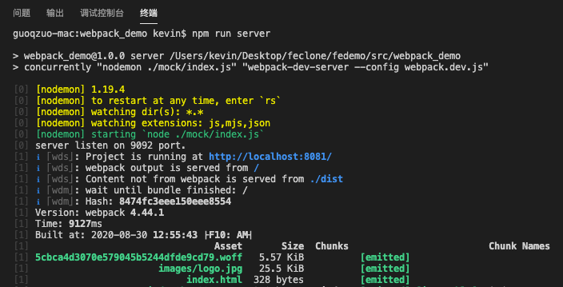

npm run 运行多条命令 && 不生效的问题
这篇文章发布于 2020/10/25，归类于 前端工程化
标签：
npm run &&多条命令不生效
在项目中除了默认的 webpack-dev-server 外，我们还想同时运行 mock 接口的 node 服务，会使用 && 同时执行两条命令
// npm run 同时执行下面的两条命令
// webpack-dev-server --config webpack.dev.js
// nodemon ./mock/index.js一般 & 表示并列执行，&& 表示两条命令顺序执行。使用 && 的形式设置对应的script，如下
"scripts": {
"server": "nodemon ./mock/index.js && webpack-dev-server --config webpack.dev.js"
}但实际运行 npm run server 时，只运行了第一条命令，我的是mac，不知道是不是node版本的问题。网上找了下， && 存在兼容性问题。建议使用 concurrently 来代替，concurrently 跨平台兼容
// 先安装 concurrently
// npm install concurrently --save
// 修改 package.json 如下
"server": "concurrently \"nodemon ./mock/index.js\" \"webpack-dev-server --config webpack.dev.js\""这样就可以了，运行效果如下

注意：&& 是按顺序执行多条命令， concurrently 是并列执行多条命令，对于跨平台的顺序执行，可以使用 npm-run-all